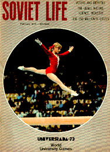

Olga Korbut (USSR)
1972 Olympic BB and FX Champion
1973
University Games AA Champion
1974 World V Champion
1976 Olympic B Silver Medalist

|
Medal Total Olympic
Games: 4 Gold, 2 Silver
|
Olga was born on May 16, 1955 in
Grodno. She has 3 older sisters (Irina, Zemfira, and Ludmila). Olga
was chosen to do gymnastics because of her small size. Her first coach was
1964 Olympic champion Elena Volchetskaya. Later, she was coached by Renald
Knysh. At age 14, Olga received permission to compete in the USSR
Championships. She placed 5th AA and and next year was the USSR's
alternate at the 1970 World Championships. Olga became an overnight star
by winning 3 gold medals at the 1972 Olympics. Although she was never able
to win a major AA title, she was (and still is) nonetheless one of the world's
favorite gymnasts.
After retiring from gymnastics, she married folk singer
Leonid Bortkevich in 1978 (they divorced in 2000) and had a son, Richard. The family
moved to the USA in the early 1990s. Olga remarried and currently lives in
Arizona.
Links: CSKA Hall of Fame, Olga's Website
Competition Results
1967
Jr. USSR Championships: 1st V, 1st UB
1969
Jr. Friendship Tournament (Druzhba): 1st Team, 1st
V, 1st B, 4th FX
USSR Championships: 5th AA
USSR Schoolchildren's Spartakiad: 2nd Team, 2nd VT, 2nd UB
1970
Chunichi Cup: 2nd AA
Jr. Friendship Tournament (Druzhba): 1st Team, 3rd AA, 2nd V, 3rd B, 4th
UB
Tokyo Cup: 1st FX, 2nd V, 2nd B, 3rd UB
USSR Championships: 15th AA, 1st V, 2nd UB
1971
Belarus Cup: 1st AA, 1st VT, 1st UB, 1st BB
Chunichi Cup: 3rd AA
GDR-USSR Dual Meet: 1st Team, 1st AA, 1st V, 1st B, 2nd FX
JPN-USSR Dual Meet: 1st Team, 1st AA
USSR Championships: 4th AA, 2nd B
1972
Olympics: 1st Team, 7th AA, 1st BB,
1st FX, 2nd UB, 5th V
Riga International: 1st AA, 1st V, 1st UB, 1st B, 1st FX
USSR Championships: 3rd AA, 2nd UB, 2nd B, 7th V
USSR Cup: 1st AA
USSR-FRG-CAN: 1st Team, 1st AA
USSR-TCH: 1st Team, 2nd AA, 1st B, 1st FX, 2nd V
1973
European Championships: 2nd AA
University Games: 1st Team, 1st AA, 1st UB, 1st BB, 1st FX, 3rd V
1974
USSR Championships: 2nd AA, 1st V, 1st UB
USSR Cup: 4th AA
World Championships: 1st Team, 2nd AA,
1st V, 2nd UB, 2nd BB, 2nd FX
1975
USSR Championships: 1st AA, 2nd V, 2nd B, 6th UB, 6th FX
USSR Spartakiade: 1st Team, 1st AA
1976
Cup of the White Russian Republic: 1st AA
Olympics: 1st Team, 5th AA, 2nd BB,
5th UB
USSR Cup: 3rd AA, 1st UB, 2nd V
This page was created on January 27, 2000 and was
last updated on March 25, 2026.
© Gymn Forum